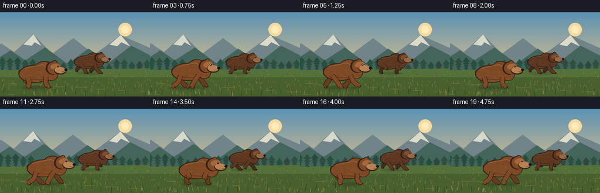
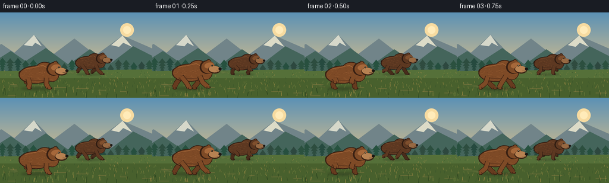

CODING AGENTS AS PIXEL WORLD MODELS
traex/GPT-5.6-Sol · instance_preservation_0013
点击播放 · 原生 RGB 像素
逐轮保存的候选
回放视频、检查图与代码变化。
每份候选均可单独播放。实际图片检查记录在下方工具轨迹中。
候选 01播放与检查图
点击播放 · 原生 RGB 像素

展开代码变化
--- 上一保存版本
+++ 本次保存版本
@@ -0,0 +1,206 @@
+from pathlib import Path
+import math, random
+import numpy as np
+from PIL import Image, ImageDraw, ImageFilter
+import artifact_io
+
+W,H,N = 256,144,20
+S=4
+WW,HH=W*S,H*S
+random.seed(13)
+
+def sc(v): return int(round(v*S))
+def pts(seq): return [(sc(x),sc(y)) for x,y in seq]
+def ellipse_poly(cx,cy,rx,ry,ang=0,n=50):
+ ca,sa=math.cos(ang),math.sin(ang)
+ return [(cx+rx*math.cos(t)*ca-ry*math.sin(t)*sa,
+ cy+rx*math.cos(t)*sa+ry*math.sin(t)*ca) for t in np.linspace(0,2*math.pi,n,endpoint=False)]
+def poly(draw, p, fill): draw.polygon(pts(p), fill=fill)
+def ellipse(draw,b,fill,outline=None,width=1):
+ draw.ellipse(tuple(sc(v) for v in b),fill=fill,outline=outline,width=sc(width) if outline else 1)
+def line(draw,p,fill,width): draw.line(pts(p),fill=fill,width=sc(width),joint='curve')
+
+def make_background(i):
+ # Smooth sky with warm light near horizon
+ arr=np.zeros((HH,WW,3),dtype=np.uint8)
+ top=np.array([91,145,181.]); bot=np.array([223,193,137.])
+ for y in range(HH):
+ t=min(1,y/(106*S)); c=top*(1-t)+bot*t
+ arr[y,:,]=np.clip(c,0,255)
+ im=Image.fromarray(arr,'RGB').convert('RGBA'); d=ImageDraw.Draw(im,'RGBA')
+ # sun and atmospheric glow
+ ellipse(d,(202,18,225,41),(247,219,160,45))
+ ellipse(d,(207,23,220,36),(255,235,185,150))
+ pan=i*0.55
+ # far mountains
+ far=[(-35-pan*.10,79),(2-pan*.10,53),(24-pan*.10,68),(57-pan*.10,38),(89-pan*.10,71),(125-pan*.10,44),(161-pan*.10,72),(206-pan*.10,39),(291-pan*.10,76),(291,110),(-35,110)]
+ poly(d,far,(113,132,137,255))
+ # snow faces
+ for p in [([(40-pan*.1,55),(57-pan*.1,38),(70-pan*.1,57),(59-pan*.1,51),(54-pan*.1,57)],(214,216,202,190)),
+ ([(187-pan*.1,55),(206-pan*.1,39),(222-pan*.1,58),(207-pan*.1,51),(200-pan*.1,58)],(220,219,199,180))]: poly(d,p[0],p[1])
+ # middle foothills
+ mid=[(-20-pan*.28,89),(18-pan*.28,65),(43-pan*.28,82),(77-pan*.28,60),(115-pan*.28,88),(151-pan*.28,62),(186-pan*.28,86),(224-pan*.28,57),(283-pan*.28,87),(283,113),(-20,113)]
+ poly(d,mid,(68,101,91,255))
+ # pine silhouettes, parallax
+ rng=random.Random(912)
+ for k in range(24):
+ x=k*13-22-(pan*.55)%13; base=103+rng.uniform(-2,2); ht=rng.uniform(15,27)
+ col=(38+rng.randrange(10),72+rng.randrange(10),63,220)
+ line(d,[(x,base),(x,base-ht)],col,1)
+ for yy in np.linspace(base-4,base-ht+5,5):
+ half=(base-yy)/ht*7+1
+ poly(d,[(x,yy-5),(x-half,yy+3),(x+half,yy+3)],col)
+ # meadow gradient
+ poly(d,[(-2,99),(258,96),(258,146),(-2,146)],(85,112,57,255))
+ # bands and moving grass texture
+ d.rectangle((0,sc(111),WW,HH),fill=(72,96,45,255))
+ rng=random.Random(220)
+ offset=(pan*2.0)%20
+ for k in range(230):
+ x=(rng.uniform(-10,276)-offset)
+ y=rng.uniform(99,144)
+ depth=(y-98)/46
+ h=(1.2+5*depth)
+ col=random.choice([(113,128,61,180),(135,135,67,150),(53,81,42,190),(174,145,73,110)])
+ line(d,[(x,y),(x+rng.uniform(-1.8,1.8),y-h)],col,max(.4,.7*depth))
+ # thin earth streaks emphasize speed
+ for k in range(10):
+ y=119+k*2.4; x=((k*37-pan*3.3)%300)-20
+ line(d,[(x,y),(x+random.uniform(8,22),y)],(145,125,69,90),.6)
+ return im
+
+def draw_shadow(im,cx,ground,scale,alpha=75):
+ sh=Image.new('RGBA',(WW,HH),(0,0,0,0)); sd=ImageDraw.Draw(sh,'RGBA')
+ ellipse(sd,(cx-32*scale,ground-2.2*scale,cx+31*scale,ground+3.8*scale),(25,28,20,alpha))
+ sh=sh.filter(ImageFilter.GaussianBlur(sc(2.0*scale)))
+ im.alpha_composite(sh)
+
+def limb(draw, shoulder, foot, scale, colors, front=True, bend=0.0, airborne=False):
+ sx,sy=shoulder; fx,fy=foot
+ # elbow bends backward/forward naturally
+ ex=sx+(fx-sx)*.48+bend*scale; ey=sy+(fy-sy)*.48+2.0*scale
+ dark,base,hi=colors
+ w=8.0*scale
+ line(draw,[(sx,sy),(ex,ey),(fx,fy-1*scale)],dark,w+2*scale)
+ line(draw,[(sx,sy),(ex,ey),(fx,fy-1*scale)],base,w)
+ # taper lower leg illusion and paw
+ line(draw,[(ex,ey),(fx,fy)],base,5.6*scale)
+ # planted paw longer; airborne curled paw smaller
+ plen=(7 if not airborne else 5)*scale
+ ellipse(draw,(fx-2.5*scale,fy-2.5*scale,fx+plen,fy+2.2*scale),dark)
+ ellipse(draw,(fx-1.5*scale,fy-2.6*scale,fx+(plen-1)*scale,fy+1.0*scale),base)
+
+def draw_bear(im,cx,ground,scale,phase,palette,seed,flip_phase=0):
+ # phase is stride angle. profile faces right.
+ bob=1.8*scale*math.cos(phase*2)
+ # brief airborne portion but paws remain visually grounded by alternating contacts
+ cy=ground-28*scale+bob
+ draw_shadow(im,cx,ground,scale,70 if scale>.7 else 52)
+ layer=Image.new('RGBA',(WW,HH),(0,0,0,0)); d=ImageDraw.Draw(layer,'RGBA')
+ outline,farcol,base,light,muzzle=palette
+ # gait foot trajectories. Opposing legs prevent accidental extra/missing limbs.
+ def foot(anchorx, p, reach, lift):
+ s=math.sin(p); c=math.cos(p)
+ x=cx+(anchorx+reach*s)*scale
+ airborne=c<0
+ y=ground-(max(0,-c)*lift*scale if airborne else 0)
+ return (x,y),airborne
+ # far limbs first: a slightly desaturated/darker pair
+ hf,hfa=foot(-19,phase+math.pi,13,10)
+ ff,ffa=foot(18,phase+math.pi+.18,13,9)
+ limb(d,(cx-18*scale,cy+7*scale),hf,scale,(outline,farcol,light),False,bend=-3,airborne=hfa)
+ limb(d,(cx+16*scale,cy+7*scale),ff,scale,(outline,farcol,light),False,bend=2,airborne=ffa)
+ # tail behind rump
+ ellipse(d,(cx-36*scale,cy-8*scale,cx-25*scale,cy+3*scale),outline)
+ ellipse(d,(cx-34*scale,cy-8*scale,cx-26*scale,cy+1*scale),base)
+ # body silhouette mask and paint: long barrel, strong shoulder hump
+ mask=Image.new('L',(WW,HH),0); md=ImageDraw.Draw(mask)
+ md.polygon(pts(ellipse_poly(cx-3*scale,cy,31*scale,16*scale,-.02)),fill=255)
+ md.polygon(pts(ellipse_poly(cx+13*scale,cy-7*scale,18*scale,16*scale,-.2)),fill=255)
+ md.polygon(pts(ellipse_poly(cx+27*scale,cy-2*scale,13*scale,15*scale,-.35)),fill=255)
+ # body dark outline undercoat
+ od=ImageDraw.Draw(layer,'RGBA')
+ od.polygon(pts(ellipse_poly(cx-3*scale,cy,33*scale,17.5*scale,-.02)),fill=outline)
+ od.polygon(pts(ellipse_poly(cx+13*scale,cy-7*scale,19*scale,17.5*scale,-.2)),fill=outline)
+ od.polygon(pts(ellipse_poly(cx+27*scale,cy-2*scale,14.5*scale,16*scale,-.35)),fill=outline)
+ fur=Image.new('RGBA',(WW,HH),(0,0,0,0)); fd=ImageDraw.Draw(fur,'RGBA')
+ fd.rectangle((0,0,WW,HH),fill=base)
+ # stable fur texture tied to each individual
+ rng=random.Random(seed)
+ for k in range(150):
+ x=cx+rng.uniform(-34,37)*scale; y=cy+rng.uniform(-18,16)*scale
+ ln=rng.uniform(1,4)*scale
+ col=light if rng.random()<.55 else farcol
+ fd.line([(sc(x),sc(y)),(sc(x+ln),sc(y+rng.uniform(-.7,.7)*scale))],fill=col,width=max(1,sc(.42*scale)))
+ fur.putalpha(Image.composite(fur.getchannel('A'),Image.new('L',(WW,HH),0),mask))
+ layer.alpha_composite(fur)
+ d=ImageDraw.Draw(layer,'RGBA')
+ # shoulder/top highlights and belly shade reinforce anatomy
+ line(d,[(cx-24*scale,cy-11*scale),(cx-6*scale,cy-14*scale),(cx+10*scale,cy-18*scale),(cx+24*scale,cy-10*scale)],light,1.1*scale)
+ line(d,[(cx-24*scale,cy+10*scale),(cx+17*scale,cy+12*scale)],farcol,2.0*scale)
+ # near limbs overlay body
+ hn,hna=foot(-18,phase,15,11)
+ fn,fna=foot(18,phase+.18,15,10)
+ limb(d,(cx-18*scale,cy+7*scale),hn,scale,(outline,base,light),True,bend=3,airborne=hna)
+ limb(d,(cx+17*scale,cy+6*scale),fn,scale,(outline,base,light),True,bend=-2,airborne=fna)
+ # neck/head profile with forehead slope, two visible rounded ears
+ # outline shapes
+ poly(d,ellipse_poly(cx+31*scale,cy-11*scale,14*scale,13*scale,-.13),outline)
+ ellipse(d,(cx+29*scale,cy-26*scale,cx+39*scale,cy-16*scale),outline)
+ ellipse(d,(cx+31*scale,cy-24.8*scale,cx+37.5*scale,cy-18*scale),base)
+ # head
+ poly(d,ellipse_poly(cx+33*scale,cy-11*scale,12.8*scale,11.8*scale,-.13),base)
+ # brow highlight
+ poly(d,ellipse_poly(cx+35*scale,cy-14*scale,9*scale,5.5*scale,-.2),light)
+ # muzzle projects distinctly to right
+ poly(d,ellipse_poly(cx+45*scale,cy-6*scale,12*scale,7.5*scale,.08),outline)
+ poly(d,ellipse_poly(cx+45*scale,cy-7*scale,10.8*scale,6.3*scale,.08),muzzle)
+ ellipse(d,(cx+53*scale,cy-10*scale,cx+59*scale,cy-5*scale),(28,23,18,255))
+ # eye and glint
+ ellipse(d,(cx+39.0*scale,cy-15.5*scale,cx+42.4*scale,cy-12.3*scale),(24,18,13,255))
+ ellipse(d,(cx+40.0*scale,cy-15.0*scale,cx+41.0*scale,cy-14.0*scale),(242,223,174,255))
+ # mouth and nostril, short claws on planted near paws
+ line(d,[(cx+48*scale,cy-3.8*scale),(cx+55*scale,cy-4.0*scale)],(48,31,21,230),.7*scale)
+ ellipse(d,(cx+54.0*scale,cy-9.0*scale,cx+56.0*scale,cy-7.7*scale),(8,8,7,210))
+ # small motion whiskers
+ for q in [-1,1]: line(d,[(cx+51*scale,cy-3*scale),(cx+58*scale,cy+q*1.2*scale)],(63,48,32,130),.35)
+ im.alpha_composite(layer)
+
+def dust(im,x,y,phase,scale,seed):
+ lay=Image.new('RGBA',(WW,HH),(0,0,0,0)); d=ImageDraw.Draw(lay,'RGBA'); rng=random.Random(seed)
+ for k in range(7):
+ age=(phase+k*.17)%1
+ xx=x-(5+age*24+rng.uniform(-2,2))*scale
+ yy=y-(age*5+rng.uniform(0,3))*scale
+ r=(1.2+age*3.7)*scale
+ ellipse(d,(xx-r*1.6,yy-r,xx+r*1.6,yy+r),(176,151,96,int(55*(1-age))))
+ lay=lay.filter(ImageFilter.GaussianBlur(sc(.7)))
+ im.alpha_composite(lay)
+
+def frame(i):
+ im=make_background(i)
+ t=i/(N-1)
+ # Both animals advance through the meadow while the camera subtly follows.
+ # Rear, darker bear is smaller and higher in scene, never merges with front bear.
+ p=2*math.pi*(i/4.0)
+ bx=150+13*t+1.1*math.sin(i*.35)
+ draw_bear(im,bx,104,.66,p+1.05,
+ ((46,27,17,255),(72,44,27,255),(93,56,33,255),(127,79,45,255),(151,105,67,255)),29)
+ dust(im,bx-23,103,(i%4)/4,.66,98)
+ # Foreground cinnamon bear, larger and offset in gait
+ ax=63+25*t+1.2*math.sin(i*.30)
+ draw_bear(im,ax,128,.88,p,
+ ((55,31,18,255),(103,59,31,255),(126,74,38,255),(166,104,58,255),(183,130,82,255)),17)
+ dust(im,ax-28,127,((i+1)%4)/4,.9,77)
+ # foreground grass blades occasionally cross paws for depth
+ d=ImageDraw.Draw(im,'RGBA'); rng=random.Random(501+i)
+ for k in range(18):
+ x=(k*17-i*2.1)%275-8; y=139+rng.uniform(-3,6)
+ line(d,[(x,y),(x+rng.uniform(-2,2),y-rng.uniform(5,12))],(43,68,31,190),rng.uniform(.5,1.0))
+ return np.array(im.convert('RGB').resize((W,H),Image.Resampling.LANCZOS),dtype=np.uint8)
+
+def main():
+ frames=np.stack([frame(i) for i in range(N)])
+ artifact_io.save(frames,Path(__file__).resolve().parent)
+
+if __name__=='__main__': main()
可观测工具轨迹
实际执行的命令与返回图片。
命令 1exit 0
/bin/bash -lc "cat prompt.txt && printf '\\n---RULES---\\n' && cat GENERATION_RULES.md && printf '\\n---SPEC---\\n' && cat task_spec.json"
命令 2exit 0
/bin/bash -lc "find . -maxdepth 2 -type f -printf '%p\\n' | sort"
命令 3exit 0
/bin/bash -lc 'cat artifact_io.py'
命令 4exit 0
/bin/bash -lc "cat > generate.py <<'PY'
from pathlib import Path
import math, random
import numpy as np
from PIL import Image, ImageDraw, ImageFilter
import artifact_io
W,H,N = 256,144,20
S=4
WW,HH=W*S,H*S
random.seed(13)
def sc(v): return int(round(v*S))
def pts(seq): return [(sc(x),sc(y)) for x,y in seq]
def ellipse_poly(cx,cy,rx,ry,ang=0,n=50):
ca,sa=math.cos(ang),math.sin(ang)
return [(cx+rx*math.cos(t)*ca-ry*math.sin(t)*sa,
cy+rx*math.cos(t)*sa+ry*math.sin(t)*ca) for t in np.linspace(0,2*math.pi,n,endpoint=False)]
def poly(draw, p, fill): draw.polygon(pts(p), fill=fill)
def ellipse(draw,b,fill,outline=None,width=1):
draw.ellipse(tuple(sc(v) for v in b),fill=fill,outline=outline,width=sc(width) if outline else 1)
def line(draw,p,fill,width): draw.line(pts(p),fill=fill,width=sc(width),joint='curve')
def make_background(i):
# Smooth sky with warm light near horizon
arr=np.zeros((HH,WW,3),dtype=np.uint8)
top=np.array([91,145,181.]); bot=np.array([223,193,137.])
for y in range(HH):
t=min(1,y/(106*S)); c=top*(1-t)+bot*t
arr[y,:,]=np.clip(c,0,255)
im=Image.fromarray(arr,'RGB').convert('RGBA'); d=ImageDraw.Draw(im,'RGBA')
# sun and atmospheric glow
ellipse(d,(202,18,225,41),(247,219,160,45))
ellipse(d,(207,23,220,36),(255,235,185,150))
pan=i*0.55
# far mountains
far=[(-35-pan*.10,79),(2-pan*.10,53),(24-pan*.10,68),(57-pan*.10,38),(89-pan*.10,71),(125-pan*.10,44),(161-pan*.10,72),(206-pan*.10,39),(291-pan*.10,76),(291,110),(-35,110)]
poly(d,far,(113,132,137,255))
# snow faces
for p in [([(40-pan*.1,55),(57-pan*.1,38),(70-pan*.1,57),(59-pan*.1,51),(54-pan*.1,57)],(214,216,202,190)),
([(187-pan*.1,55),(206-pan*.1,39),(222-pan*.1,58),(207-pan*.1,51),(200-pan*.1,58)],(220,219,199,180))]: poly(d,p[0],p[1])
# middle foothills
mid=[(-20-pan*.28,89),(18-pan*.28,65),(43-pan*.28,82),(77-pan*.28,60),(115-pan*.28,88),(151-pan*.28,62),(186-pan*.28,86),(224-pan*.28,57),(283-pan*.28,87),(283,113),(-20,113)]
poly(d,mid,(68,101,91,255))
# pine silhouettes, parallax
rng=random.Random(912)
for k in range(24):
x=k*13-22-(pan*.55)%13; base=103+rng.uniform(-2,2); ht=rng.uniform(15,27)
col=(38+rng.randrange(10),72+rng.randrange(10),63,220)
line(d,[(x,base),(x,base-ht)],col,1)
for yy in np.linspace(base-4,base-ht+5,5):
half=(base-yy)/ht*7+1
poly(d,[(x,yy-5),(x-half,yy+3),(x+half,yy+3)],col)
# meadow gradient
poly(d,[(-2,99),(258,96),(258,146),(-2,146)],(85,112,57,255))
# bands and moving grass texture
d.rectangle((0,sc(111),WW,HH),fill=(72,96,45,255))
rng=random.Random(220)
offset=(pan*2.0)%20
for k in range(230):
x=(rng.uniform(-10,276)-offset)
y=rng.uniform(99,144)
depth=(y-98)/46
h=(1.2+5*depth)
col=random.choice([(113,128,61,180),(135,135,67,150),(53,81,42,190),(174,145,73,110)])
line(d,[(x,y),(x+rng.uniform(-1.8,1.8),y-h)],col,max(.4,.7*depth))
# thin earth streaks emphasize speed
for k in range(10):
y=119+k*2.4; x=((k*37-pan*3.3)%300)-20
line(d,[(x,y),(x+random.uniform(8,22),y)],(145,125,69,90),.6)
return im
def draw_shadow(im,cx,ground,scale,alpha=75):
sh=Image.new('RGBA',(WW,HH),(0,0,0,0)); sd=ImageDraw.Draw(sh,'RGBA')
ellipse(sd,(cx-32*scale,ground-2.2*scale,cx+31*scale,ground+3.8*scale),(25,28,20,alpha))
sh=sh.filter(ImageFilter.GaussianBlur(sc(2.0*scale)))
im.alpha_composite(sh)
def limb(draw, shoulder, foot, scale, colors, front=True, bend=0.0, airborne=False):
sx,sy=shoulder; fx,fy=foot
# elbow bends backward/forward naturally
ex=sx+(fx-sx)*.48+bend*scale; ey=sy+(fy-sy)*.48+2.0*scale
dark,base,hi=colors
w=8.0*scale
line(draw,[(sx,sy),(ex,ey),(fx,fy-1*scale)],dark,w+2*scale)
line(draw,[(sx,sy),(ex,ey),(fx,fy-1*scale)],base,w)
# taper lower leg illusion and paw
line(draw,[(ex,ey),(fx,fy)],base,5.6*scale)
# planted paw longer; airborne curled paw smaller
plen=(7 if not airborne else 5)*scale
ellipse(draw,(fx-2.5*scale,fy-2.5*scale,fx+plen,fy+2.2*scale),dark)
ellipse(draw,(fx-1.5*scale,fy-2.6*scale,fx+(plen-1)*scale,fy+1.0*scale),base)
def draw_bear(im,cx,ground,scale,phase,palette,seed,flip_phase=0):
# phase is stride angle. profile faces right.
bob=1.8*scale*math.cos(phase*2)
# brief airborne portion but paws remain visually grounded by alternating contacts
cy=ground-28*scale+bob
draw_shadow(im,cx,ground,scale,70 if scale>.7 else 52)
layer=Image.new('RGBA',(WW,HH),(0,0,0,0)); d=ImageDraw.Draw(layer,'RGBA')
outline,farcol,base,light,muzzle=palette
# gait foot trajectories. Opposing legs prevent accidental extra/missing limbs.
def foot(anchorx, p, reach, lift):
s=math.sin(p); c=math.cos(p)
x=cx+(anchorx+reach*s)*scale
airborne=c<0
y=ground-(max(0,-c)*lift*scale if airborne else 0)
return (x,y),airborne
# far limbs first: a slightly desaturated/darker pair
hf,hfa=foot(-19,phase+math.pi,13,10)
ff,ffa=foot(18,phase+math.pi+.18,13,9)
limb(d,(cx-18*scale,cy+7*scale),hf,scale,(outline,farcol,light),False,bend=-3,airborne=hfa)
limb(d,(cx+16*scale,cy+7*scale),ff,scale,(outline,farcol,light),False,bend=2,airborne=ffa)
# tail behind rump
ellipse(d,(cx-36*scale,cy-8*scale,cx-25*scale,cy+3*scale),outline)
ellipse(d,(cx-34*scale,cy-8*scale,cx-26*scale,cy+1*scale),base)
# body silhouette mask and paint: long barrel, strong shoulder hump
mask=Image.new('L',(WW,HH),0); md=ImageDraw.Draw(mask)
md.polygon(pts(ellipse_poly(cx-3*scale,cy,31*scale,16*scale,-.02)),fill=255)
md.polygon(pts(ellipse_poly(cx+13*scale,cy-7*scale,18*scale,16*scale,-.2)),fill=255)
md.polygon(pts(ellipse_poly(cx+27*scale,cy-2*scale,13*scale,15*scale,-.35)),fill=255)
# body dark outline undercoat
od=ImageDraw.Draw(layer,'RGBA')
od.polygon(pts(ellipse_poly(cx-3*scale,cy,33*scale,17.5*scale,-.02)),fill=outline)
od.polygon(pts(ellipse_poly(cx+13*scale,cy-7*scale,19*scale,17.5*scale,-.2)),fill=outline)
od.polygon(pts(ellipse_poly(cx+27*scale,cy-2*scale,14.5*scale,16*scale,-.35)),fill=outline)
fur=Image.new('RGBA',(WW,HH),(0,0,0,0)); fd=ImageDraw.Draw(fur,'RGBA')
fd.rectangle((0,0,WW,HH),fill=base)
# stable fur texture tied to each individual
rng=random.Random(seed)
for k in range(150):
x=cx+rng.uniform(-34,37)*scale; y=cy+rng.uniform(-18,16)*scale
ln=rng.uniform(1,4)*scale
col=light if rng.random()<.55 else farcol
fd.line([(sc(x),sc(y)),(sc(x+ln),sc(y+rng.uniform(-.7,.7)*scale))],fill=col,width=max(1,sc(.42*scale)))
fur.putalpha(Image.composite(fur.getchannel('A'),Image.new('L',(WW,HH),0),mask))
layer.alpha_composite(fur)
d=ImageDraw.Draw(layer,'RGBA')
# shoulder/top highlights and belly shade reinforce anatomy
line(d,[(cx-24*scale,cy-11*scale),(cx-6*scale,cy-14*scale),(cx+10*scale,cy-18*scale),(cx+24*scale,cy-10*scale)],light,1.1*scale)
line(d,[(cx-24*scale,cy+10*scale),(cx+17*scale,cy+12*scale)],farcol,2.0*scale)
# near limbs overlay body
hn,hna=foot(-18,phase,15,11)
fn,fna=foot(18,phase+.18,15,10)
limb(d,(cx-18*scale,cy+7*scale),hn,scale,(outline,base,light),True,bend=3,airborne=hna)
limb(d,(cx+17*scale,cy+6*scale),fn,scale,(outline,base,light),True,bend=-2,airborne=fna)
# neck/head profile with forehead slope, two visible rounded ears
# outline shapes
poly(d,ellipse_poly(cx+31*scale,cy-11*scale,14*scale,13*scale,-.13),outline)
ellipse(d,(cx+29*scale,cy-26*scale,cx+39*scale,cy-16*scale),outline)
ellipse(d,(cx+31*scale,cy-24.8*scale,cx+37.5*scale,cy-18*scale),base)
# head
poly(d,ellipse_poly(cx+33*scale,cy-11*scale,12.8*scale,11.8*scale,-.13),base)
# brow highlight
poly(d,ellipse_poly(cx+35*scale,cy-14*scale,9*scale,5.5*scale,-.2),light)
# muzzle projects distinctly to right
poly(d,ellipse_poly(cx+45*scale,cy-6*scale,12*scale,7.5*scale,.08),outline)
poly(d,ellipse_poly(cx+45*scale,cy-7*scale,10.8*scale,6.3*scale,.08),muzzle)
ellipse(d,(cx+53*scale,cy-10*scale,cx+59*scale,cy-5*scale),(28,23,18,255))
# eye and glint
ellipse(d,(cx+39.0*scale,cy-15.5*scale,cx+42.4*scale,cy-12.3*scale),(24,18,13,255))
ellipse(d,(cx+40.0*scale,cy-15.0*scale,cx+41.0*scale,cy-14.0*scale),(242,223,174,255))
# mouth and nostril, short claws on planted near paws
line(d,[(cx+48*scale,cy-3.8*scale),(cx+55*scale,cy-4.0*scale)],(48,31,21,230),.7*scale)
ellipse(d,(cx+54.0*scale,cy-9.0*scale,cx+56.0*scale,cy-7.7*scale),(8,8,7,210))
# small motion whiskers
for q in [-1,1]: line(d,[(cx+51*scale,cy-3*scale),(cx+58*scale,cy+q*1.2*scale)],(63,48,32,130),.35)
im.alpha_composite(layer)
def dust(im,x,y,phase,scale,seed):
lay=Image.new('RGBA',(WW,HH),(0,0,0,0)); d=ImageDraw.Draw(lay,'RGBA'); rng=random.Random(seed)
for k in range(7):
age=(phase+k*.17)%1
xx=x-(5+age*24+rng.uniform(-2,2))*scale
yy=y-(age*5+rng.uniform(0,3))*scale
r=(1.2+age*3.7)*scale
ellipse(d,(xx-r*1.6,yy-r,xx+r*1.6,yy+r),(176,151,96,int(55*(1-age))))
lay=lay.filter(ImageFilter.GaussianBlur(sc(.7)))
im.alpha_composite(lay)
def frame(i):
im=make_background(i)
t=i/(N-1)
# Both animals advance through the meadow while the camera subtly follows.
# Rear, darker bear is smaller and higher in scene, never merges with front bear.
p=2*math.pi*(i/4.0)
bx=150+13*t+1.1*math.sin(i*.35)
draw_bear(im,bx,104,.66,p+1.05,
((46,27,17,255),(72,44,27,255),(93,56,33,255),(127,79,45,255),(151,105,67,255)),29)
dust(im,bx-23,103,(i%4)/4,.66,98)
# Foreground cinnamon bear, larger and offset in gait
ax=63+25*t+1.2*math.sin(i*.30)
draw_bear(im,ax,128,.88,p,
((55,31,18,255),(103,59,31,255),(126,74,38,255),(166,104,58,255),(183,130,82,255)),17)
dust(im,ax-28,127,((i+1)%4)/4,.9,77)
# foreground grass blades occasionally cross paws for depth
d=ImageDraw.Draw(im,'RGBA'); rng=random.Random(501+i)
for k in range(18):
x=(k*17-i*2.1)%275-8; y=139+rng.uniform(-3,6)
line(d,[(x,y),(x+rng.uniform(-2,2),y-rng.uniform(5,12))],(43,68,31,190),rng.uniform(.5,1.0))
return np.array(im.convert('RGB').resize((W,H),Image.Resampling.LANCZOS),dtype=np.uint8)
def main():
frames=np.stack([frame(i) for i in range(N)])
artifact_io.save(frames,Path(__file__).resolve().parent)
if __name__=='__main__': main()
PY
python generate.py"命令 5exit 0
/bin/bash -lc "python - <<'PY'
import numpy as np
from PIL import Image
z=np.load('pixels.npz')['pixels']
ims=list(sorted(__import__('pathlib').Path('frames').glob('*.png')))
print('pixels',z.shape,z.dtype,'frames',len(ims),Image.open(ims[0]).mode,Image.open(ims[0]).size)
print('artifacts:',*[p for p in ['pixels.npz','index.html','inspection.png','transition_check.png','generate.py'] if __import__('pathlib').Path(p).exists()])
PY"视觉工具实际返回图片 1

视觉工具实际返回图片 2

保存候选 1 份；完成命令 5 次；可验证图片返回 2 张。原始 API 响应与完整日志保留在本地。